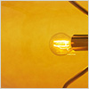
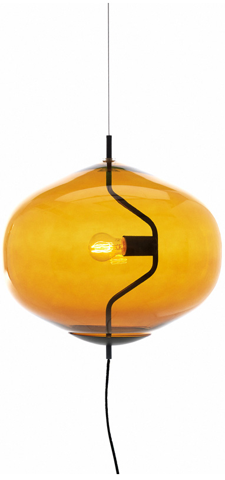

<div id="project-fondue-full" class="popup-project">
  <article class="project project--full">
    <a class="project__close btn-close" href="#">
      <span class="hidden">Close project</span>
    </a>
    <div class="project__content">
      <h3 class="project__title">Fondue</h3>
      <div class="project__inner">
        <dl class="project__info">
          <dt class="project__option">Project Assistant:</dt>
          <dd class="project__value">Francesco Dompieri</dd>
          <dt class="project__option">Material:</dt>
          <dd class="project__value">Glass and Metal</dd>
          <dt class="project__option">Typology:</dt>
          <dd class="project__value">Suspension lamp</dd>
          <dt class="project__option">Client:</dt>
          <dd class="project__value">David Design</dd>
          <dt class="project__option">Year:</dt>
          <dd class="project__value">2014</dd>
        </dl>
        <div class="project__desc">
          <p class="project__text">
            Merging different traditions – the South European and the North European – in the field of household suspended lights is the starting point of Fondue, a lamp designed by Luca Nichetto for the Swedish David Design. The inspiration comes from the observation of pot bellied traditional fondue cauldrons, which were kept suspended above a heat source for the cheese to slowly melt. Similarly, the pot bellied glass diffuser is suspended, supported by a slender metal frame enclosing the light source.
          </p>
          <p class="project__text">
            One of Fondue’s peculiarities is the solution designed for the output of the power cable, which is generally concealed or made less evident. Instead, here it becomes a feature of the lamp, located in its lower part, which allows the power source to be released from the fixing point in the ceiling. This makes Fondue easily adaptable to various architectural situations.
          </p>
        </div>
        <figure class="project__gallery gallery">
          <figcaption class="gallery__nav">
            <button class="gallery__arrow btn-arrow btn-arrow--prev btn-reset" type="button" disabled>
              <span class="hidden">previous picture</span>
              <svg width="26" height="61"><use xlink:href="#icon-arrow-button"></use></svg>
            </button>
            <a class="gallery__item gallery__item--active">
              
            </a>
            <a class="gallery__item" href="#" title="zoom">
              
            </a>
            <button class="gallery__arrow btn-arrow btn-arrow--next btn-reset" type="button">
              <span class="hidden">next picture</span>
              <svg width="26" height="61"><use xlink:href="#icon-arrow-button"></use></svg>
            </button>
          </figcaption>
          <div class="gallery__img">
            
          </div>
        </figure>
        <ul class="project__social social social--share list-reset">
          <li class="social__item">
            <a class="social__link" href="#" title="Share on facebook">
              <svg class="social__icon" width="22" height="22"><use xlink:href="#icon-facebook"></use></svg>
            </a>
          </li>
          <li class="social__item">
            <a class="social__link" href="#" title="Share on twitter">
              <svg class="social__icon" width="24" height="24"><use xlink:href="#icon-twitter"></use></svg>
            </a>
          </li>
          <li class="social__item">
            <a class="social__link" href="#" title="Share on google+">
              <svg class="social__icon" width="22" height="22"><use xlink:href="#icon-google"></use></svg>
            </a>
          </li>
          <li class="social__item">
            <a class="social__link" href="#" title="Share on email">
              <svg class="social__icon" width="22" height="22"><use xlink:href="#icon-email"></use></svg>
            </a>
          </li>
        </ul>
      </div>
    </div>
  </article>
</div>
